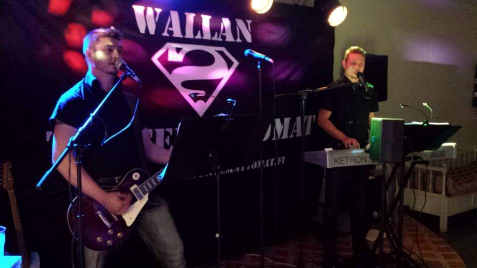
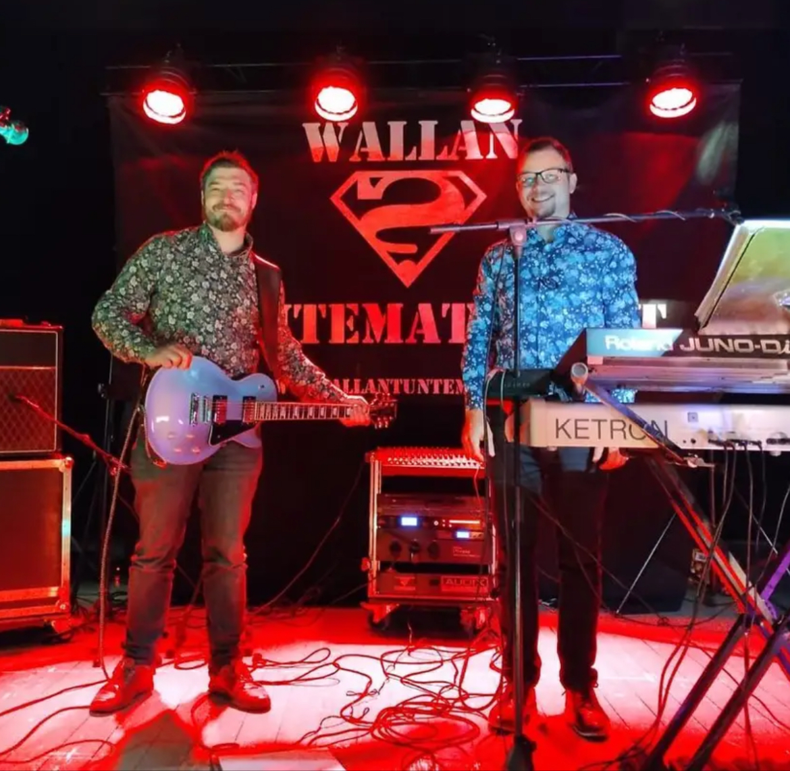
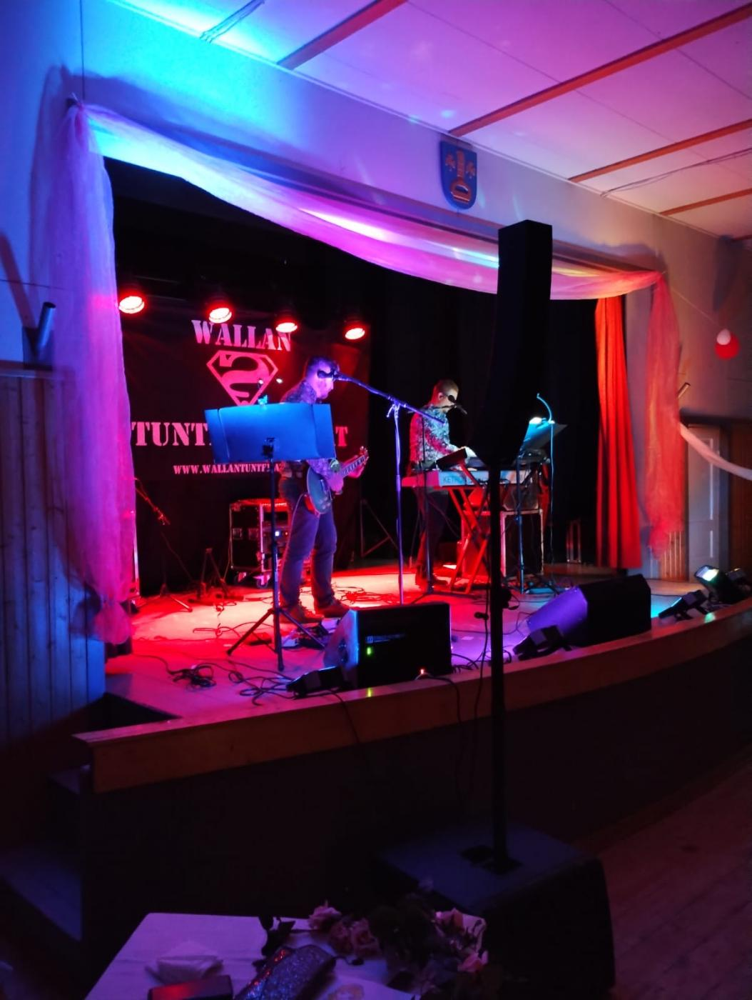
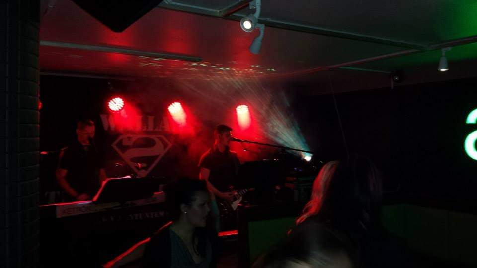
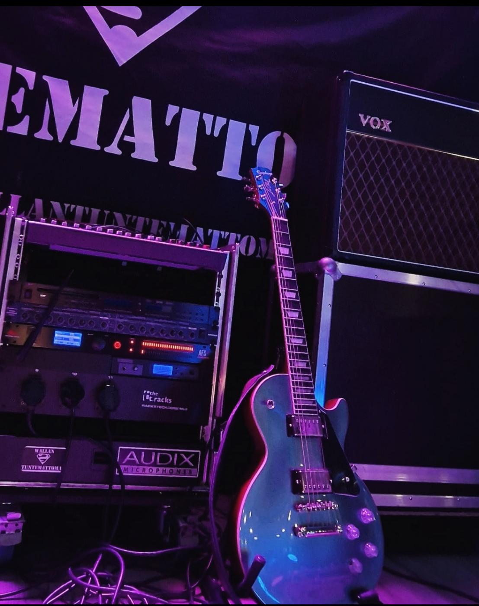

Pori
Yksityistilaisuus

Satakuntalainen bile- ja tanssiorkesteri
Kaksi miestä, pitkä yhteinen soittohistoria ja tanssilattialle rakennettu ohjelmisto häihin, juhliin, yritystilaisuuksiin ja ravintolailtoihin.
Kuka soittaa
Wallan Tuntemattomat sai alkunsa yhteisestä soittohistoriasta, joka alkoi jo vuonna 2006. Harrastusmielinen yhteissoitto kasvoi ystävien juhlien ja häiden kautta omaksi orkesteriksi, ja vuonna 2012 nimi vakiintui ensimmäisten yleisten keikkojen myötä.
Keikoilla yhdistyy tanssimusiikki, suomipop, rock, iskelmä, disco ja rautalanka. Ohjelmisto elää tilanteen mukaan, jotta alkuillan tunnelma, juhlaväen toiveet ja loppuillan tanssilattia pysyvät samassa rytmissä.




Keikoille ja juhliin
Yksityistilaisuus
Yksityistilaisuus
Yksityistilaisuus
Yksityistilaisuus
Yksityistilaisuus
Vierumäen Urheiluopisto
Yksityistilaisuus
Yksityistilaisuus
Yksityistilaisuus
Yksityistilaisuus
Yksityistilaisuus
“Bändi sai kaikki vieraat tanssilattialle ja paljon kehuja kaikilta vierailta.”
“Ohjelmisto 10+, joka saa kankeammankin juhlijan iloisesti joraamaan.”
Ohjelmisto
Varaa iltaan livebändi